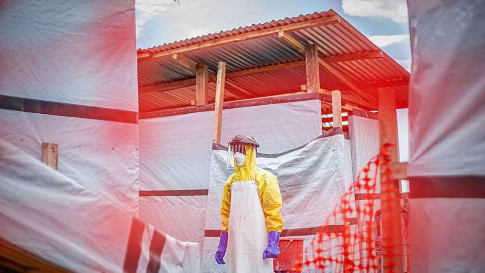
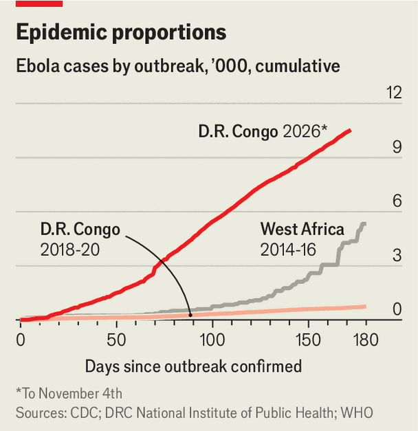

The latest Ebola outbreak could be the worst ever
New cases in Kenya and Nigeria show that the outbreak is unchecked

Nov 5th 2026
“SANITISE,” says the security guard outside a school in Nairobi, gesturing towards a dispenser. Since Kenya reported its first-ever case of the Ebola virus last month many venues in its capital have made visitors disinfect their hands and get their temperatures checked. Officials tell people to avoid large gatherings. “I want to appeal to Kenyans going forward that we can also avoid handshakes or hugging,” said Patrick Amoth, the director-general at the health ministry. “We can just wave.”
The precautions reflect growing concern about the spread of an Ebola outbreak that emerged in the east of the Democratic Republic of Congo this year. The Kenyan case involved a businessman who had been living in eastern Congo but returned home to Kenya via Uganda on October 3rd. He died two days later. Kenya has since reported eight more cases (and another death), all of them contacts of the first. On October 20th another of Africa’s largest economies, Nigeria, reported its first case of Ebola in a decade. A woman who had travelled to Uganda tested positive in Abuja, Nigeria’s capital.

Since the outbreak was officially declared in May there have been more than 10,500 confirmed cases of the gruesome and terrifying virus. Almost half (5,130) have so far resulted in death, with all but four of the fatalities in eastern Congo. Fewer than a quarter of new cases there occur in patients who are known contacts of previous cases, says Jean Kaseya, the director of Africa Cdc, a public-health body. So long as authorities are in the dark about the virus, the epidemic will keep growing.
Ebola spreads via direct contact with an infected person’s bodily fluids. Suspected patients must be tested and positive cases isolated. Direct contacts of patients should be identified and tested, too. Health workers need protective equipment to avoid falling sick themselves.
Attempting this in eastern Congo can be like trying to give someone a haircut with toy scissors in a house on fire. Health workers are few in number and poorly paid. Testing kits and isolation facilities are scarce. Bad roads make it difficult to reach patients and bring in supplies; so do the scores of militias that terrorise the region.
The long-suffering population has a deep lack of trust in the Congolese state. Many eastern Congolese believe Ebola is a fiction, concocted by venal bigwigs to embezzle donor funds. On October 24th a machete-wielding mob in eastern Congo killed a nurse whom they accused of spreading Ebola by contaminating water supplies. In September a politician from the ruling party was beaten to death after he went on the radio to urge people to take precautions against Ebola.
The worst Ebola outbreak on record happened between 2014 and 2016 in west Africa, where the UN’s World Health Organisation recorded at least 28,600 cases and 11,325 deaths. Haphazard surveillance means it is hard to compare the current epidemic with the one that ended a decade ago. But this outbreak, which involves a rarer strain of Ebola known as Bundibugyo, seems to be spreading and killing more quickly. Mr Kaseya fears that on current trends it “will be the worst Ebola outbreak ever” within another year.
Given the scale of the outbreak in Congo, which has more shared borders than anywhere else in Africa, it is unsurprising that Ebola has been found in nearby countries. Though Uganda officially closed its border with Congo in May, it is a porous frontier. Kenya’s first Ebola patient crossed into Uganda from Congo last month before flying to Nairobi. He subsequently slipped through screening at the airport in Kenya undetected, despite showing symptoms of Ebola on his journey.
The Nigerian case is more troubling. Officials in Uganda claimed at first that the woman had visited eastern Congo. This seems false. She is thought to have been at Uganda’s main airport on the same day as Kenya’s first patient. But there is no evidence yet that they came into contact with one another. All of which raises questions about whether, despite Uganda’s denials, there are active cases in the country. “My biggest concern is that the source of the Nigerian patient’s infection remains unexplained,” says Ahmed Kalebi, a Kenyan pathologist.
Countries such as Kenya, Nigeria and Uganda have relatively strong health systems. They should be able to stop the virus from exploding as it has in Congo.
But there are still three concerns. The first is that Congo is a large country—with an ongoing war in the east involving M23, a Rwandan-backed force. There is a lot of room for further spread. The second is that Ebola could take off in the most fragile of Congo’s bordering states: Burundi, South Sudan and the Central African Republic. The third worry is that the longer the outbreak persists, the greater the secondary effects. In the west African outbreak thousands more babies and mothers died than would have otherwise been the case because of disruptions to health services. Doctors working in Congo say fewer children are being immunised and malaria is on the rise.
The good news is that there are efforts to find an effective vaccine against Bundibugyo. On October 23rd the first participants in clinical trials in eastern Congo received shots of Ervebo, a vaccine that protects against a more common strain. Scientists are also working on a bespoke jab. But it will be months, at best, before a proven vaccine is produced. For many people that will be far too late. ■
Sign up to the Analysing Africa, a weekly newsletter that keeps you in the loop about the world’s youngest—and least understood—continent.